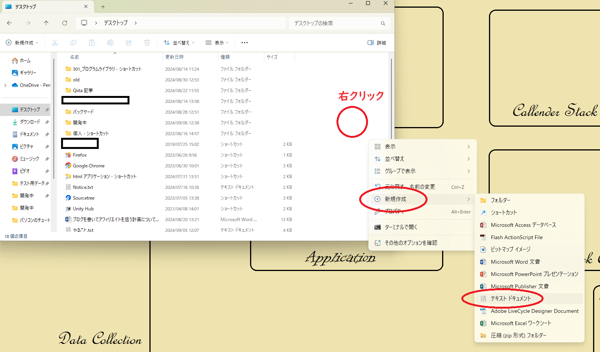

デスクトップにメモファイルを作ろう
次にメモファイルを作ります。ファイルとはパソコンの中の音楽や写真、映像、文書など、そのそれぞれの単一での記録物の事を言います。例えば家族の写真1枚、自分の写真1枚など、写真1枚でひとつのファイルという単位で取り扱います。エクスプローラーでデスクトップフォルダを開いた状態でエクスプローラー上で右クリックをして「新規作成 > テキストドキュメント」を選択します。右クリックはマウスの右を 1 回押して、すぐに離して行います。どのあたりを右クリックすれば良いかどうかは下の画像を参考にして下さい。

<< 前へ 次へ >>